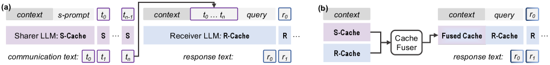

Why it matters왜 중요한가
Multi-LLM systems are everywhere — coder + writer, big model + small model, generalist + specialist. But they all talk in one impoverished language: text.
멀티-LLM 시스템은 도처에 있다 — 코더+작가, 큰 모델+작은 모델, 제너럴리스트+전문가. 그러나 이들은 모두 빈약한 하나의 언어, 즉 텍스트로만 대화한다.
Text-to-text (T2T) communication has three structural problems. (1) Information bottleneck: a model's high-dimensional internal state must be squeezed into a linear token stream, losing nuance one model "knows" but cannot phrase. (2) Ambiguity: natural language is vague (the paper's example: a coder fails to convey that <p> is a paragraph separator). (3) Latency: every exchange needs token-by-token decoding by the sender and re-encoding by the receiver. C2C asks a simple but radical question — can LLMs communicate beyond text? — and answers yes, by treating the KV-cache as the communication channel.
텍스트(T2T) 통신에는 세 가지 구조적 문제가 있다. (1) 정보 병목: 모델의 고차원 내부 상태를 선형 토큰 열로 압축해야 하므로, 모델이 "알지만" 말로 표현하지 못하는 미묘함이 손실된다. (2) 모호성: 자연어는 애매하다(논문 예시: 코더가 <p>가 문단 구분자임을 전달하지 못함). (3) 지연: 매 교환마다 송신자의 토큰 단위 디코딩과 수신자의 재인코딩이 필요하다. C2C는 단순하지만 급진적인 질문 — LLM은 텍스트를 넘어 소통할 수 있는가? — 을 던지고, KV-캐시를 통신 채널로 삼아 "그렇다"고 답한다.

By the numbers핵심 숫자
Core results핵심 결과
| Benchmark | Receiver-only | Text-to-Text | Cache-to-Cache |
|---|---|---|---|
| MMLU-Redux | 35.53 | 41.03 | 42.92 |
| OpenBookQA | 39.20 | 44.00 | 52.60 |
| ARC-Challenge | 41.04 | 49.48 | 54.52 |
| C-Eval | 32.04 | 35.88 | 41.77 |
| Average | 36.95 | 42.60 | 47.95 |
A 0.6B Receiver, helped by a 0.5B Sharer's cache, lands ~11 points above going solo and ~5 points above passing text — and the per-query latency for C2C (0.30–0.40 s) is close to the lone Receiver, while T2T costs 0.8–1.5 s.
0.6B Receiver가 0.5B Sharer의 캐시 도움을 받아 단독 대비 약 11점, 텍스트 전달 대비 약 5점 높아진다 — 게다가 C2C의 질의당 지연(0.30–0.40초)은 단독 Receiver에 가깝고, T2T는 0.8–1.5초가 든다.
In one diagram한 장의 그림
The two ideas that make it work작동을 가능케 한 두 아이디어
KV-caches carry transferable semantics
Two probing experiments justify the whole idea. Cache enrichment: prefilling on exemplars then dropping their cache (keeping only a semantically "enriched" question cache of the same length) lifts accuracy 58.4 → 62.3% — so quality, not length, is what helps. Cache transformation: an MLP can project one model's cache into another's representation space (t-SNE shows it lands inside the target subspace) — so caches are convertible across heterogeneous LLMs.
두 가지 탐침 실험이 아이디어 전체를 정당화한다. 캐시 보강: 예시로 prefill 후 그 캐시를 버리고 같은 길이의 의미적으로 "풍부해진" 질문 캐시만 남기면 정확도가 58.4 → 62.3%로 오른다 — 즉 길이가 아니라 품질이 도움을 준다. 캐시 변환: MLP가 한 모델의 캐시를 다른 모델의 표현 공간으로 투영할 수 있다(t-SNE상 타깃 부분공간 안에 위치) — 즉 이종 LLM 간에 캐시가 변환 가능하다.
Project → weight → gate, with a residual
Per layer, the fuser concatenates Receiver and Sharer caches, projects them, applies an input-aware dynamic head weighting, and adds the result back to the Receiver cache (residual). A learnable per-layer gate (Gumbel-sigmoid, binary at inference) decides whether that layer gets the Sharer's signal at all — because the oracle showed some layers help and others hurt. Both LLMs stay frozen; only fusers train, with plain next-token loss.
레이어마다 fuser는 Receiver·Sharer 캐시를 이어붙여 투영하고, 입력 인지 동적 헤드 가중을 적용한 뒤 그 결과를 Receiver 캐시에 더한다(잔차). 학습형 레이어별 게이트(Gumbel-sigmoid, 추론 시 이진)가 해당 레이어에 Sharer 신호를 넣을지 결정한다 — 오라클 실험에서 일부 레이어는 도움, 일부는 해가 되기 때문. 두 LLM은 동결, fuser만 일반 next-token 손실로 학습한다.
How it works어떻게 작동하나
- Independent prefill.독립 prefill. Sharer and Receiver each encode the same context, producing their own KV-caches in parallel. Sharer와 Receiver가 같은 맥락을 각자 인코딩해 자기 KV-캐시를 병렬로 만든다.
- Token & layer alignment.토큰·레이어 정렬. Different tokenizers/depths are reconciled: tokens are re-encoded with maximal-coverage selection; layers are matched terminal-first (align final layers, then work backward), since deep layers hold higher-level semantics. 서로 다른 토크나이저·깊이를 맞춘다: 토큰은 maximal-coverage 방식으로 재인코딩하고, 레이어는 마지막부터(terminal-first) 정렬한다(깊은 레이어가 상위 의미를 담으므로).
- Fuse per layer.레이어별 융합. The Cache Fuser injects the aligned Sharer cache into the Receiver cache via projection, dynamic weighting, and a gated residual add. Cache Fuser가 정렬된 Sharer 캐시를 투영·동적 가중·게이트 잔차 덧셈으로 Receiver 캐시에 주입한다.
- Decode once.한 번에 디코딩. The Receiver generates its answer conditioned on the fused cache — no Sharer text is ever produced, so fusion (~90 ms) replaces token-by-token decoding (~1300 ms). Receiver가 융합 캐시를 바탕으로 답을 생성한다 — Sharer 텍스트는 전혀 만들지 않으므로, 융합(약 90 ms)이 토큰 단위 디코딩(약 1300 ms)을 대체한다.
- Train only the fuser.fuser만 학습. Freeze both LLMs; backprop next-token loss through the fuser modules only, on a general SFT mix. 두 LLM을 동결하고, 일반 SFT 데이터로 next-token 손실을 fuser 모듈에만 역전파한다.
What to take away그래서, 가져갈 것
A working existence proof that LLMs can communicate in latent space (KV-cache), not just text — richer signal and parallel transfer, beating T2T on both accuracy and speed.
LLM이 텍스트가 아닌 잠재 공간(KV-캐시)에서 소통할 수 있다는 실증 — 더 풍부한 신호 그리고 병렬 전송으로 정확도·속도 모두 T2T를 능가.
Gains come from complementary understanding across heterogeneous models, not extra capacity: an ablation shows a different Sharer beats an identical-model Sharer, and effective rank of the Receiver cache rises after fusion.
향상은 추가 용량이 아니라 이종 모델 간 상호보완적 이해에서 온다: ablation에서 다른 Sharer가 동일 모델 Sharer를 능가하고, 융합 후 Receiver 캐시의 effective rank가 증가.
It even lets a weak instruction-tuned Receiver borrow knowledge from a strong base model that can't follow instructions in T2T at all — fusion sidesteps the "can't phrase it" problem.
지시를 못 따르는 강한 base 모델의 지식을, 약한 instruction-tuned Receiver가 빌려 쓸 수 있게 한다 — 융합이 "말로 표현 못 함" 문제를 우회.